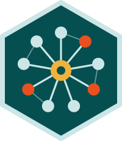

Research
My research is in Bayesian statistics, statistical network models, and latent variable models, with applications in political science, criminal justice, and public policy. Current projects include Bayesian network scale-up models for estimating the size of hard-to-reach populations, and network models of what members of Congress talk about.
Publications
From Speech to Networks: Modeling Discursive Alignment in the U.S. Congress (2026). Complex Networks & Their Applications XV (COMPLEX NETWORKS 2026). Springer. Forthcoming.
With Sahar Abi-Hassan, Janet M. Box-Steffensmeier, Dino P. Christenson, Chandler J. L’Hommedieu, Laura Moses, Grace Orians, Adam Perhala, Enan Srivastava, and Cianna Mancino.
Software

networkscaleup: Network Scale-Up Models for Aggregated Relational Data (Python) 
With Ian Laga and Sarah Nagy.
Estimates the size of hard-to-reach populations from aggregated relational data: survey answers to questions like “How many people do you know who …?” A Python port and extension of the R package of the same name, it implements the plug-in and maximum likelihood estimators of Killworth et al. (1998), the overdispersed model of Zheng, Salganik, and Gelman (2006), and the uncorrelated, correlated, and covariate models of Laga, Bao, and Niu (2021), with Bayesian models fit in Stan.
Presentations
Immigration and Law Enforcement Trends at the Southwest Border (2025). Poster, American Society of Criminology Annual Meeting, Washington, DC.
Federal Immigration Offense Trends Using the FCCPS (2025). American Society of Criminology Annual Meeting, Washington, DC. Accepted; cancelled because of the federal government shutdown.
Immigration and Law Enforcement Trends at the Southwest Border, 2012–2022 (2024). Coding it Forward Demo Day.
Congressional Speech Networks: Their Formation and Importance (2024). Poster, Denman Undergraduate Research Forum, The Ohio State University.
Abstract
Congressional speeches drive policymaking and political debate at the national level. As a crucial method of communication, these speeches directly reflect legislators’ political agendas and serve as a vehicle by which members of Congress can convey their political priorities and advocate for important issues. Prior to technological advances that made modern natural language processing methods computationally feasible, survey data and analysis of behavior in strategic settings (i.e. legislative roll-call voting) were used to analyze congress members’ policy positions and social networks. However, both of these approaches lead to methodological conflicts; new surveys cannot capture past information and represent but a small snapshot of the present, while institutional rules constrain roll-call analysis. Congressional speeches, on the other hand, are less constrained by institutional rules and capture information over a period of time, thus providing a much deeper view into the positions, ideologies, and rhetorical relationships of members of Congress. Previous work applied well known natural language processing methods to determine the level of rhetorical similarity between speeches contained in the Congressional Record from 1981 to 2017, developing relational networks between members of Congress based on these similarities. These networks illuminated the lexical similarities between legislators, the links between rhetorical relationships, partisanship, and legislative effectiveness, and how rhetorical trends developed over three and a half decades. However, more work is needed to illuminate factors that contribute to the similarities in congressional speech that form the basis for network connections. This project extends previous work through the application of exponential random graph models to congressional speech networks, allowing for statistical analysis of the impact of various endogenous structural effects and exogenous covariates on the formation of congressional speech networks over time. Analyzing factors that contribute to the formation of network ties in each Congress provides significant insights into the evolution of relationships over time as well as the underlying dynamics and trends driving legislators’ rhetorical relationships. These insights improve our understanding of social ties in Congress and could even be used to inform strategies that aim to facilitate more effective political discourse and lawmaking in Congress.
Thesis
Hot Topics in the House: The Formation and Importance of Congressional Speech Networks (2024). Undergraduate honors thesis, The Ohio State University.
Advised by Janet M. Box-Steffensmeier. Henry R. Spencer Award for Outstanding Senior Honors Thesis in Political Science.
Abstract
Congressional speeches drive policy making and political debate at the national level. As a crucial method of communication, these speeches directly reflect legislators’ political agendas and serve as a vehicle by which members of Congress can convey their political priorities and advocate for important issues. Previous work applied well-known natural language processing methods to determine the level of rhetorical similarity between speeches contained in the Daily Edition of the Congressional Record from 1981 to 2017, developing relational networks between members of Congress based on these similarities. Through the application of a pooled temporal exponential random graph model to these networks, the impact of various endogenous (inside the network) and exogenous (outside the network) effects on the formation of congressional speech networks over this 36-year period of time is evaluated. Analysis of factors that contribute to the formation of network ties in each Congress yields significant insights into the evolution of rhetorical relationships over time. Moreover, it sheds light on the underlying dynamics and trends driving similarities between the topics discussed in speeches given on the House floor. Ultimately, these speech networks provide a direct window into the motivations and beliefs underlying congressional rhetoric. This unique glimpse into the inner workings of Congress improves our understanding of the most important legislative body in the United States and motivates future research studying this institution.
Before posting the Complex Networks accepted manuscript. Springer’s licence lets you put the accepted manuscript on your own website on acceptance, under two conditions: do not apply any open licence (e.g. Creative Commons) to it, and print this statement on the PDF itself (e.g. as a first-page footnote), with the DOI filled in once it is assigned:
This version of the contribution has been accepted for publication, after peer review (when applicable) but is not the Version of Record and does not reflect post-acceptance improvements, or any corrections. The Version of Record is available online at: http://dx.doi.org/[insert DOI]. Use of this Accepted Version is subject to the publisher’s Accepted Manuscript terms of use https://www.springernature.com/gp/open-research/policies/accepted-manuscript-terms.
Then save the PDF as files/cn2026_accepted_manuscript.pdf and uncomment its link above.